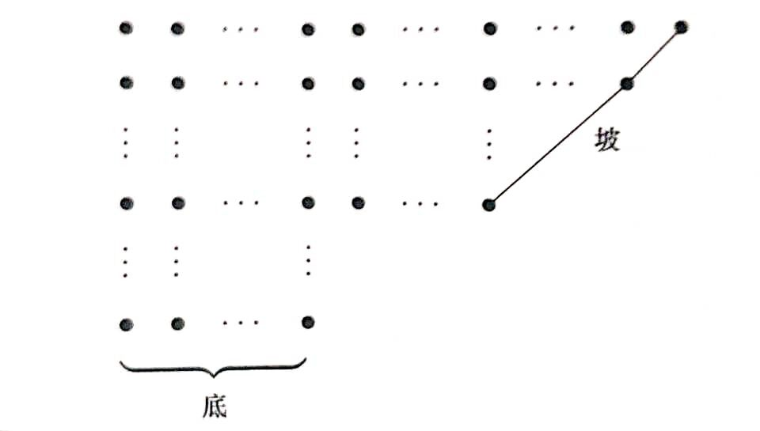

分拆数
分拆：将自然数 𝑛n 写成递降正整数和的表示．
写成递降正整数和的表示．
𝑛=𝑟1+𝑟2+…+𝑟𝑘𝑟1≥𝑟2≥…≥𝑟𝑘≥1n=r1+r2+…+rkr1≥r2≥…≥rk≥1
和式中每个正整数称为一个部分．
分拆数：𝑝𝑛pn．自然数 𝑛n 的分拆方法数．
自 00 开始的分拆数：
| n | 0 | 1 | 2 | 3 | 4 | 5 | 6 | 7 | 8 |
|---|---|---|---|---|---|---|---|---|---|
| 𝑝𝑛pn | 1 | 1 | 2 | 3 | 5 | 7 | 11 | 15 | 22 |
k 部分拆数
将 𝑛n 分成恰有 𝑘k 个部分的分拆，称为 𝑘k 部分拆数，记作 𝑝(𝑛,𝑘)p(n,k)．
显然，𝑘k 部分拆数 𝑝(𝑛,𝑘)p(n,k) 同时也是下面方程的解数：
𝑛−𝑘=𝑦1+𝑦2+…+𝑦𝑘𝑦1≥𝑦2≥…≥𝑦𝑘≥0n−k=y1+y2+…+yky1≥y2≥…≥yk≥0
如果这个方程里面恰有 𝑗j 个部分非 0，则恰有 𝑝(𝑛 −𝑘,𝑗)p(n−k,j) 个解．因此有和式：
𝑝(𝑛,𝑘)=𝑘∑𝑗=0𝑝(𝑛−𝑘,𝑗)p(n,k)=∑j=0kp(n−k,j)
相邻两个和式作差，得：
𝑝(𝑛,𝑘)=𝑝(𝑛−1,𝑘−1)+𝑝(𝑛−𝑘,𝑘)p(n,k)=p(n−1,k−1)+p(n−k,k)
如果列出表格，每个格里的数，等于左上方的数，加上该格向上方数，所在列数个格子中的数．
| k | 0 | 1 | 2 | 3 | 4 | 5 | 6 | 7 | 8 |
|---|---|---|---|---|---|---|---|---|---|
| 𝑝(0,𝑘)p(0,k) | 1 | 0 | 0 | 0 | 0 | 0 | 0 | 0 | 0 |
| 𝑝(1,𝑘)p(1,k) | 0 | 1 | 0 | 0 | 0 | 0 | 0 | 0 | 0 |
| 𝑝(2,𝑘)p(2,k) | 0 | 1 | 1 | 0 | 0 | 0 | 0 | 0 | 0 |
| 𝑝(3,𝑘)p(3,k) | 0 | 1 | 1 | 1 | 0 | 0 | 0 | 0 | 0 |
| 𝑝(4,𝑘)p(4,k) | 0 | 1 | 2 | 1 | 1 | 0 | 0 | 0 | 0 |
| 𝑝(5,𝑘)p(5,k) | 0 | 1 | 2 | 2 | 1 | 1 | 0 | 0 | 0 |
| 𝑝(6,𝑘)p(6,k) | 0 | 1 | 3 | 3 | 2 | 1 | 1 | 0 | 0 |
| 𝑝(7,𝑘)p(7,k) | 0 | 1 | 3 | 4 | 3 | 2 | 1 | 1 | 0 |
| 𝑝(8,𝑘)p(8,k) | 0 | 1 | 4 | 5 | 5 | 3 | 2 | 1 | 1 |
例题
计算 k 部分拆数
计算 𝑘k 部分拆数 𝑝(𝑛,𝑘)p(n,k)．多组输入，其中 𝑛n 上界为 1000010000，𝑘k 上界为 10001000，对 10000071000007 取模．
观察表格与递推式，按列更新对于存储更有利．不难写出程序：
---|---
### 生成函数
由等比数列求和公式，有：
11−𝑥𝑘=1+𝑥𝑘+𝑥2𝑘+𝑥3𝑘+…11−xk=1+xk+x2k+x3k+…1+𝑝1𝑥+𝑝2𝑥2+𝑝3𝑥3+…=11−𝑥11−𝑥211−𝑥3…1+p1x+p2x2+p3x3+…=11−x11−x211−x3…
对于 𝑘k 部分拆数，生成函数稍微复杂．具体写出如下：
∞∑𝑛,𝑘=0𝑝(𝑛,𝑘)𝑥𝑛𝑦𝑘=11−𝑥𝑦11−𝑥2𝑦11−𝑥3𝑦…∑n,k=0∞p(n,k)xnyk=11−xy11−x2y11−x3y…
### Ferrers 图
Ferrers 图：将分拆的每个部分用点组成的行表示．每行点的个数为这个部分的大小．
根据分拆的定义，Ferrers 图中不同的行按照递减的次序排放．最长行在最上面．
例如：分拆 12 =5 +4 +2 +112=5+4+2+1 的 Ferrers 图．

将一个 Ferrers 图沿着对角线翻转，得到的新 Ferrers 图称为原图的共轭，新分拆称为原分拆的共轭．显然，共轭是对称的关系．
例如上述分拆 12 =5 +4 +2 +112=5+4+2+1 的共轭是分拆 12 =4 +3 +2 +2 +112=4+3+2+2+1．
最大 𝑘k 分拆数：自然数 𝑛n 的最大部分为 𝑘k 的分拆个数．
根据共轭的定义，有显然结论：
最大 𝑘k 分拆数与 𝑘k 部分拆数相同，均为 𝑝(𝑛,𝑘)p(n,k)．
## 互异分拆数
互异分拆数：𝑝𝑑𝑛pdn．自然数 𝑛n 的各部分互不相同的分拆方法数．（Different）
n| 0| 1| 2| 3| 4| 5| 6| 7| 8
---|---|---|---|---|---|---|---|---|---
𝑝𝑑𝑛pdn| 1| 1| 1| 2| 2| 3| 4| 5| 6
同样地，定义互异 𝑘k 部分拆数 𝑝𝑑(𝑛,𝑘)pd(n,k)，表示最大拆出 𝑘k 个部分的互异分拆，是这个方程的解数：
𝑛=𝑟1+𝑟2+…+𝑟𝑘𝑟1>𝑟2>…>𝑟𝑘≥1n=r1+r2+…+rkr1>r2>…>rk≥1
完全同上，也是这个方程的解数：
𝑛−𝑘=𝑦1+𝑦2+…+𝑦𝑘𝑦1>𝑦2>…>𝑦𝑘≥0n−k=y1+y2+…+yky1>y2>…>yk≥0
这里与上面不同的是，由于互异，新方程中至多只有一个部分为零．有不变的结论：恰有 𝑗j 个部分非 00，则恰有 𝑝𝑑(𝑛 −𝑘,𝑗)pd(n−k,j) 个解，这里 𝑗j 只取 𝑘k 或 𝑘 −1k−1．因此直接得到递推：
𝑝𝑑(𝑛,𝑘)=𝑝𝑑(𝑛−𝑘,𝑘−1)+𝑝𝑑(𝑛−𝑘,𝑘)pd(n,k)=pd(n−k,k−1)+pd(n−k,k)
同样像组合数一样列出表格，每个格里的数，等于该格前一列上数，所在列数个格子中的数，加上该格向上方数，所在列数个格子中的数．
k| 0| 1| 2| 3| 4| 5| 6| 7| 8
---|---|---|---|---|---|---|---|---|---
𝑝𝑑(0,𝑘)pd(0,k)| 1| 0| 0| 0| 0| 0| 0| 0| 0
𝑝𝑑(1,𝑘)pd(1,k)| 0| 1| 0| 0| 0| 0| 0| 0| 0
𝑝𝑑(2,𝑘)pd(2,k)| 0| 1| 0| 0| 0| 0| 0| 0| 0
𝑝𝑑(3,𝑘)pd(3,k)| 0| 1| 1| 0| 0| 0| 0| 0| 0
𝑝𝑑(4,𝑘)pd(4,k)| 0| 1| 1| 0| 0| 0| 0| 0| 0
𝑝𝑑(5,𝑘)pd(5,k)| 0| 1| 2| 0| 0| 0| 0| 0| 0
𝑝𝑑(6,𝑘)pd(6,k)| 0| 1| 2| 1| 0| 0| 0| 0| 0
𝑝𝑑(7,𝑘)pd(7,k)| 0| 1| 3| 1| 0| 0| 0| 0| 0
𝑝𝑑(8,𝑘)pd(8,k)| 0| 1| 3| 2| 0| 0| 0| 0| 0
### 例题
计算互异分拆数
计算互异分拆数 𝑝𝑑𝑛pdn．多组输入，其中 𝑛n 上界为 5000050000，对 10000071000007 取模．
观察表格与递推式，按列更新对于存储更有利．代码中将后一位缩减了空间，仅保留相邻两项．
---|---
奇分拆数
奇分拆数：𝑝𝑜𝑛pon．自然数 𝑛n 的各部分都是奇数的分拆方法数．（Odd）
有一个显然的等式：
∞∏𝑖=1(1+𝑥𝑖)=∏∞𝑖=1(1−𝑥2𝑖)∏∞𝑖=1(1−𝑥𝑖)=∞∏𝑖=111−𝑥2𝑖−1∏i=1∞(1+xi)=∏i=1∞(1−x2i)∏i=1∞(1−xi)=∏i=1∞11−x2i−1
最左边是互异分拆数的生成函数，最右边是奇分拆数的生成函数．两者对应系数相同，因此，奇分拆数和互异分拆数相同：
𝑝𝑜𝑛=𝑝𝑑𝑛pon=pdn
但显然 𝑘k 部奇分拆数和互异 𝑘k 部分拆数不是一个概念，这里就不列出了．
再引入两个概念：
互异偶分拆数：𝑝𝑑𝑒𝑛pden．自然数 𝑛n 的部分数为偶数的互异分拆方法数．（Even）
互异奇分拆数：𝑝𝑑𝑜𝑛pdon．自然数 𝑛n 的部分数为奇数的互异分拆方法数．（Odd）
因此有：
𝑝𝑑𝑛=𝑝𝑑𝑒𝑛+𝑝𝑑𝑜𝑛pdn=pden+pdon
同样也有相应的 𝑘k 部概念．由于过于复杂，不再列出．
五边形数定理
单独观察分拆数的生成函数的分母部分：
∞∏𝑖=1(1−𝑥𝑖)∏i=1∞(1−xi)
将这部分展开，可以想到互异分拆，与互异分拆拆出的部分数奇偶性有关．
具体地，互异偶部分拆在展开式中被正向计数，互异奇部分拆在展开式中被负向计数．因此展开式中各项系数为两方法数之差．即：
∞∑𝑖=0(𝑝𝑑𝑒𝑛−𝑝𝑑𝑜𝑛)𝑥𝑛=∞∏𝑖=1(1−𝑥𝑖)∑i=0∞(pden−pdon)xn=∏i=1∞(1−xi)
接下来说明，多数情况下，上述两方法数相等，在展开式中系数为 00；仅在少数位置，两方法数相差 11 或 −1−1．
这里可以借助构造对应的办法．
画出每个互异分拆的 Ferrers 图．最后一行称为这个图的底，底上点的个数记为 𝑏b（Bottom）；连接最上面一行的最后一个点与图中某点的最长 4545 度角线段，称为这个图的坡，坡上点的个数记为 𝑠s（Slide）．

要想在互异偶部分拆与互异奇部分拆之间构造对应，就要定义变换，在保证互异条件不变的前提下，使得行数改变 11：
变换 A：当 𝑏b 小于等于 𝑠s 的时候，就将底移到右边，成为一个新坡．
变换 B：当 𝑏b 大于 𝑠s 的时候，就将坡移到下边，成为一个新底．
这两个变换对于大多数 𝑛n 的任意互异分拆，恰有一个变换可以进行，就在互异偶部分拆与互异奇部分拆之间构造了一个一一对应．已经构造了一一对应的两部分分拆个数相等，因此这时展开式中第 𝑛n 项系数为 00．
但是对于某些 𝑛n，其存在恰一个互异分拆无法进行上述变换．
- 情况一：𝑏 =𝑠b=s 且底与坡有一个公共点时，变换 A 不能进行．此时
𝑛=𝑠+(𝑠+1)+…+(𝑠+𝑠−1)=𝑠(3𝑠−1)2n=s+(s+1)+…+(s+s−1)=s(3s−1)2
展开式的第 𝑛n 项与分拆部分数的奇偶性有关，为 ( −1)𝑠𝑥𝑛(−1)sxn．
- 情况二：𝑏 =𝑠 +1b=s+1 且底与坡有一个公共点时，变换 B 不能进行．此时
𝑛=(𝑠+1)+(𝑠+2)+…+(𝑠+𝑠)=𝑠(3𝑠+1)2n=(s+1)+(s+2)+…+(s+s)=s(3s+1)2
展开式的第 𝑛n 项为 ( −1)𝑠𝑥𝑛(−1)sxn．
用 −𝑠−s 替换上式的 𝑠s，得到 𝑛 =𝑠(3𝑠−1)2n=s(3s−1)2，其中 𝑠s 为负整数，展开式的第 𝑛n 项仍为 ( −1)𝑠𝑥𝑛(−1)sxn．．
由于两种情况不会在同一个 𝑛n 同时出现，我们可以把两个条件合起来，得到 𝑛n 需要满足的条件是
∃𝑘∈ℤ,𝑛=𝑘(3𝑘−1)2∃k∈Z,n=k(3k−1)2
至此，我们就证明了：
(1−𝑥)(1−𝑥2)(1−𝑥3)…=+∞∑𝑘=−∞(−1)𝑘𝑥𝑘(3𝑘−1)2=…+𝑥26−𝑥15+𝑥7−𝑥2+1−𝑥+𝑥5−𝑥12+𝑥22−…(1−x)(1−x2)(1−x3)…=∑k=−∞+∞(−1)kxk(3k−1)2=…+x26−x15+x7−x2+1−x+x5−x12+x22−…
回忆一下：这个式子是分拆数的生成函数的倒数，因此其与分拆数的生成函数相乘的结果是 11．整理并对比两边各项系数，就得到分拆数数列的递推式．
(1+𝑝1𝑥+𝑝2𝑥2+𝑝3𝑥3+…)(1−𝑥−𝑥2+𝑥5+𝑥7−𝑥12−𝑥15+𝑥22+𝑥26−…)=1(1+p1x+p2x2+p3x3+…)(1−x−x2+x5+x7−x12−x15+x22+x26−…)=1𝑝𝑛=𝑝𝑛−1+𝑝𝑛−2−𝑝𝑛−5−𝑝𝑛−7+…pn=pn−1+pn−2−pn−5−pn−7+…
这个递推式有无限项，但是如果规定负数的分拆数是 00（00 的分拆数已经定义为 11），那么就简化为了有限项．
例题
计算分拆数
计算分拆数 𝑝𝑛pn．多组输入，其中 𝑛n 上界为 5000050000，对 10000071000007 取模．
采用五边形数定理的方法．有代码：
---|---
* * *
> __本页面最近更新： 2026/1/7 08:56:54，[更新历史](https://github.com/OI-wiki/OI-wiki/commits/master/docs/math/combinatorics/partition.md)
> __发现错误？想一起完善？[在 GitHub 上编辑此页！](https://oi-wiki.org/edit-landing/?ref=/math/combinatorics/partition.md "edit.link.title")
> __本页面贡献者：[Tiphereth-A](https://github.com/Tiphereth-A), [Ir1d](https://github.com/Ir1d), [2008verser](https://github.com/2008verser), [Early0v0](https://github.com/Early0v0), [Enter-tainer](https://github.com/Enter-tainer), [Great-designer](https://github.com/Great-designer), [ksyx](https://github.com/ksyx), [myeeye](https://github.com/myeeye), [Xeonacid](https://github.com/Xeonacid), [YOYO-UIAT](https://github.com/YOYO-UIAT)
> __本页面的全部内容在**[CC BY-SA 4.0](https://creativecommons.org/licenses/by-sa/4.0/deed.zh) 和 [SATA](https://github.com/zTrix/sata-license)** 协议之条款下提供，附加条款亦可能应用